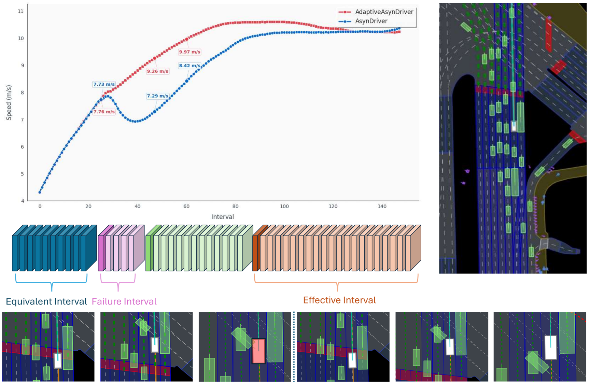

Fixed intervals miss temporal variation
Triggering the slow module at a fixed frequency wastes compute in easy segments and may miss the moments where slow reasoning is most useful.
Institute for AI Industry Research, Tsinghua University · University of Science and Technology of China · Beihang University · Lenovo Group Limited
A lightweight gate for deciding when a fast-slow autonomous driving planner should query an LLM, reuse cached guidance, or drop unreliable slow-system outputs under a compute budget.
Demo
The demo video is compressed for web playback. It is stored directly in this GitHub Pages site as a static MP4 asset.
Problem
Triggering the slow module at a fixed frequency wastes compute in easy segments and may miss the moments where slow reasoning is most useful.
Heuristic complexity estimates do not necessarily align with the marginal utility of slow guidance, causing unnecessary oscillation and mis-timed queries.
We cast slow-module control as sequence generation and train a frame-level controller to choose Query, Cache, or Drop actions.
Method
Abstract
Large language models can improve autonomous driving planning, but querying them online is expensive. Existing fast-slow planners often rely on hand-designed triggering rules that either over-call the slow system or call it at the wrong times.
We formulate slow-system invocation as a resource-aware sequential decision problem and propose the Adaptive Slow-System Control Gate (ASSCG), which makes frame-level Query, Cache, and Drop decisions. ASSCG uses an RWKV backbone for efficient long-horizon gating and is trained with supervised fine-tuning followed by GRPO-style compute-aware reinforcement fine-tuning.
ASSCG improves AsyncDriver on nuPlan Hard20 to 67.28 (+2.28) while reducing average end-to-end inference latency by approximately 60%. On a RecogDrive-based dual system evaluated on NAVSIM, ASSCG achieves 91.4 PDMS (+0.6) and increases average speed by approximately 25%.
Training and Evaluation
Each frame is represented as a gating token prediction problem, enabling long-horizon temporal modeling with an RWKV backbone.
ASSCG starts from supervised pseudo-labels and is then fine-tuned with a compute-aware objective that balances planning quality against slow-query cost.
We evaluate on AsyncDriver with nuPlan Hard20 closed-loop testing and on a RecogDrive-based dual system with NAVSIM PDMS and speed measurements.
Analysis
Re-querying the slow system yields negligible closed-loop change, so cached guidance remains sufficient.
Slow guidance can actively hurt the trajectory. ASSCG can choose Drop to suppress the cached slow feature.
The current slow guidance improves behavior and should be reused until its value decays or context changes.

Introduction
Motion planning remains a core challenge in autonomous driving, especially in complex, dynamic, and long-tail interactions. LLMs provide commonsense reasoning and scenario priors, but their latency and compute cost make per-frame deployment difficult.
The fast-slow paradigm offers a practical compromise: a real-time fast planner runs every frame while a slower LLM module provides high-level guidance at a lower frequency. However, fixed schedules ignore temporal variability, and heuristic difficulty triggers often fail to capture the marginal utility of slow reasoning.
ASSCG addresses this by learning when to consult the slow module, when to reuse cached guidance, and when to drop unreliable slow outputs. This turns slow-module coordination into a sequential decision problem optimized for closed-loop quality under a compute budget.
Results
| Method | Score | Latency |
|---|---|---|
| AsyncDriver | 65.00 | 0.80 s/frame |
| AsyncDriver, 5-frame interval | 64.27 | 0.32 s/frame |
| AdaptiveAsyncDriver (ASSCG) | 67.28 | 0.32 s/frame |
ASSCG improves the score by +2.28 over AsyncDriver while matching the latency of a fixed 5-frame interval baseline.
| Method | PDMS | Latency |
|---|---|---|
| ReCogDrive | 90.8 | ~350 ms |
| RecogDrive-based dual system + ASSCG | 91.4 | ~270 ms |
The same gating principle transfers to NAVSIM, improving PDMS by +0.6 while reducing wall-clock inference latency.
Ablations
Starting from supervised pseudo-labels gives a usable gate, while GRPO-style fine-tuning optimizes the policy directly for closed-loop reward under query cost.
Compared with Transformer-style attention, RWKV provides a compact recurrent state and lower last-frame gate latency for long scenes.
The Drop action suppresses cached slow guidance during failure intervals, improving robustness beyond simply reducing query frequency.